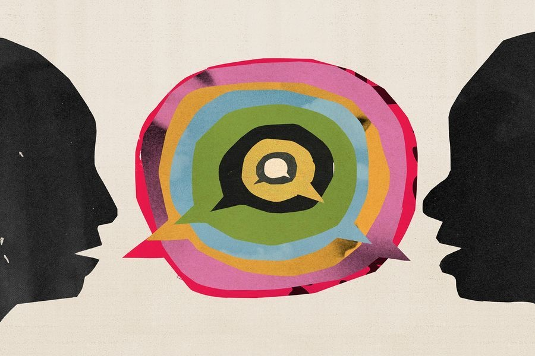

Resume
A dedicated page for experience, education, internships, leadership, and future downloadable resume materials.
Integrated Studies Portfolio
I study how people think, what they believe, and why trust breaks—using psychology and rhetoric to make sense of systems that shape perception, behavior, and power.
This portfolio brings together research, writing, rhetorical analysis, design, and applied communication work shaped by an interdisciplinary interest in public trust, systems, and the way meaning is made and contested.
About
Kate Fletcher
I am a student at the College of Charleston studying Integrated Studies, with concentrations in psychology and writing, rhetoric, and publication. My academic interests sit at the intersection of human behavior and communication—especially how people form beliefs, how trust is built or lost, and how information moves through institutions, media, and public life.
I chose Integrated Studies because the questions I care most about could never be answered through just one discipline. Psychology gave me a way to think more seriously about perception, cognition, emotion, and decision-making, while writing and rhetoric gave me a framework for understanding how language, narrative, and persuasion shape the way those psychological processes unfold in the world.
My academic work is also deeply personal. During my first semester of senior year, my brother passed away, and that experience has fundamentally shaped the way I think about people, systems, and value. It has pushed me to think more critically about humanity, care, and what happens when people are overlooked by systems that were never built with them in mind.
After graduation, I plan to pursue law school and professional work focused on public trust, access, accountability, and large-scale systemic issues. My goal is not simply to study how systems work, but to contribute to making them more legible, more equitable, and more humane.
Framework

Integrated Perspective
I do not approach psychology and communication as separate fields. I see them as part of the same system: how people think, what they believe, and how they communicate are constantly shaping each other.
My work focuses on the point where those systems begin to break down—especially around trust. Whether in media, science, public discourse, or everyday decision-making, I am interested in what happens when people stop believing institutions, experts, or even each other.
By combining psychological insight with rhetorical strategy, I aim to understand not just what people believe, but why—and how those beliefs are formed, challenged, and changed. This portfolio reflects that interdisciplinary approach through research, writing, rhetorical analysis, design, and applied communication work.
Additional Pages
These pages expand the portfolio beyond project samples alone and make room for a fuller academic, personal, and professional picture.
A dedicated page for experience, education, internships, leadership, and future downloadable resume materials.
A space for honors, milestones, academic accomplishments, presentations, and meaningful recognitions.
A more personal page that goes deeper than a short bio and leaves room for reflective, statement-like writing.
A separate archive for essays, reflections, and work that sits outside the main portfolio spine but still matters.
Core Work
These projects reflect the main through-lines of my academic work: systems thinking, research, narrative translation, rhetorical analysis, design, and user-centered communication.
Investigates how public trust is shaped by expertise, media systems, and cognitive bias. This work reflects my interest in how beliefs form and how institutional credibility is built, challenged, or lost.
Senior synthesis research / trust, expertise, communication
Translates medical and psychological complexity into human-centered narrative. This work demonstrates my ability to balance research, lived experience, and accessible storytelling for broader audiences.
Longform feature writing / research translation / public-facing prose
A collected portfolio of fiction writing, revision work, and reflective practice. This piece shows my engagement with craft, emotional structure, revision, and narrative experimentation.
Collected works / revision log / reflective letter / The Hum
A public-facing print project focused on hierarchy, audience, flow, and outcomes messaging. This work reflects my interest in rhetoric not just as analysis, but as design and usability in practice.
Program leaflet / design strategy / revision-based communication
Applies usability testing and behavioral observation to identify friction points in digital environments. This work highlights my attention to user perception, trust signals, and evidence-based communication design.
Craigslist usability case study / navigation / trust / design friction
Explores how language, emotion, and lived experience interact in cultural analysis. This essay reflects my interest in interpretation, audience, and the rhetorical texture of personal and public meaning.
Music and culture / rhetorical interpretation / personal-critical analysis
Capstone
A research-driven project examining how expert disagreement, media systems, and public perception shape trust in modern society.
This capstone asks how trust in expertise is built, destabilized, and rhetorically negotiated—especially in scientific and public-facing contexts. Drawing from psychology, science communication, and rhetorical analysis, the project explores why factual accuracy alone is often not enough to sustain public trust.
This is the current working version of the paper and will be updated as the final project develops.
The Vault
This section holds projects that show breadth, experimentation, and the larger shape of my academic interests beyond the portfolio’s main spine.
A personal-critical analysis of Tchaikovsky’s “Pathétique” as a reflection of personal and societal struggle.
A longform reflective analysis connecting family, survival, morality, and media narrative.
A cultural-rhetorical exploration of Harry Styles’ “Fine Line” through emotion, conflict, and lived experience.
A separate archive for essays, reflections, and other projects that fall outside the main portfolio categories but still shape the larger body of my work.